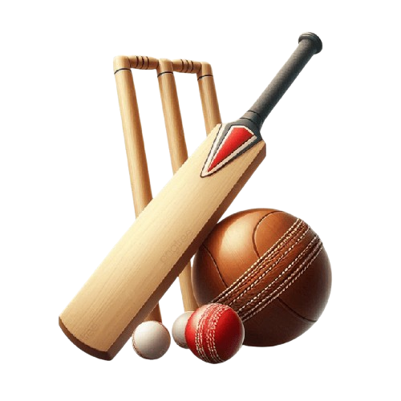
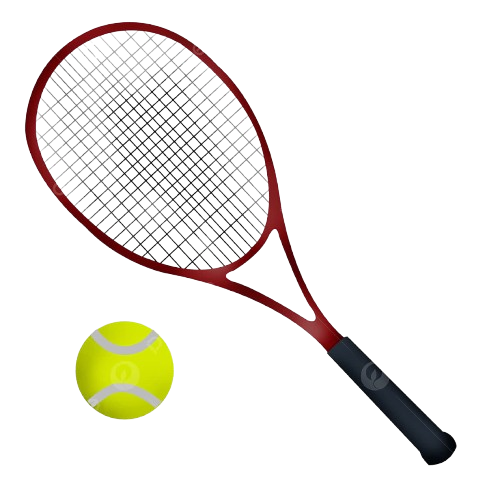

Los deportes que más gente sigue
El fútbol es el deporte con más aficionados del mundo, seguido de otros como el críquet, el baloncesto y el tenis.
Críquet

Tenis

El fútbol es el deporte con más aficionados del mundo, seguido de otros como el críquet, el baloncesto y el tenis.

